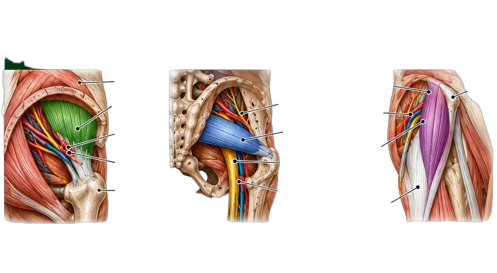
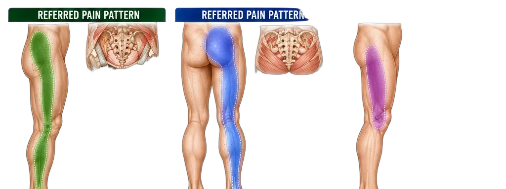

Lateral Hip Powerhouse
Anatomy · Attachments · Pain Patterns · Clinical Insights
Stable Hips. Unstoppable Movement.
Anatomy · Attachments · Pain Patterns · Clinical Insights
Stable Hips. Unstoppable Movement.
The lateral hip complex includes the gluteus minimus, piriformis, and TFL. These muscles stabilize the pelvis during walking, running, and single-leg stance. Dysfunction here causes lateral hip pain, sciatica-like symptoms, and IT band issues.


| Muscle | Origin | Insertion | Function |
|---|---|---|---|
| Gluteus Minimus | Outer ilium | Greater trochanter (anterior) | Abduction, internal rotation |
| Piriformis | Anterior sacrum (S2–S4) | Greater trochanter (superior) | External rotation, abduction |
| TFL | ASIS | IT band → lateral tibia | Flexion, abduction, internal rotation |
| Muscle | Primary Pain Location | Leg Radiation | Key Movement Pain |
|---|---|---|---|
| Gluteus Minimus | Lateral hip (trochanter) | Outside of thigh → ankle | Walking, single-leg stance |
| Piriformis | Deep glute (center) | Back of thigh → calf | Sitting, hip flexion + rotation |
| TFL | Front-outside of hip | Lateral thigh → knee | Running, stairs, lateral movement |